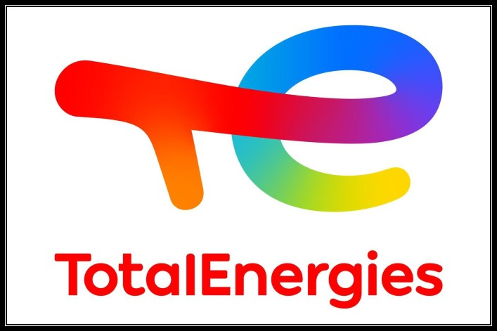

 Stagiaire Data Scientist : Totalenergies
Décembre 2022 ➝ mai 2023
Au sein de l’équipe marketing de l’entreprise, utilisation de méthodes statistiques et de modèles de Machine Learning dans le but de mieux connaître les clients. Utilisation de Azure et AWS
Stagiaire Data Engineer : Société Générale
Mai 2022 ➝ novembre 2022
Gestion de datasets de plusieurs millions de lignes pour cartographier le périmètre de modélisation. Optimisation du code et des pipelines. Participation aux réunions de pilotage avec les experts métiers pour définir les solutions et les ressources
Chef d'une équipe de 7 personnes pour mon projet d'application
2021 ➝ 2022
Création d’une application pour téléphone qui permet de comptabiliser le nombre de personnes sur une photo à l’aide de méthode de Deep Learning